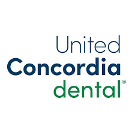
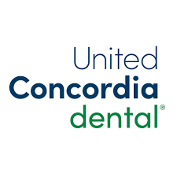
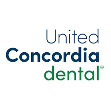

Insurance Providers
We accept a variety of insurance providers to make your dental care more accessible.


 

Dr. Vicuña and his team provide exceptional dental care to keep your smile healthy and strong for life. For over 20 years we have established trusting relationships with our patients where we can contribute to the overall well-being of all our patients. Using proven techniques for general, cosmetic, and restorative dentistry, we’ll personalize a treatment plan that meets your unique goals. From checkups, to aesthetic enhancements, to comprehensive restorations, Dr. Vicuna will perform your dental work with skill and precision.
We accept a variety of insurance providers to make your dental care more accessible.


DDS
With over 20 years of experience, Dr. Emerson Vicuña, DDS is a general dentist that loves helping people who are in need of his dental expertise. His patients adore his friendly personality, work ethic, and outstanding results. Hailing from Lima, Peru, Dr. Vicuña earned his Doctor of Dental Surgery degree from The Ohio State University after receiving his BS in Biology and Chemistry from the University of New Mexico. He is also a member of the American Dental Association and Academy of General Dentistry. Since starting his own practice in 2005, Dr. Vicuña has been the only dentist at his practice, which allows patients to get to know him personally and receive personalized care..
Extractions involve the removal of a tooth from its socket in the bone. This procedure may be necessary due to tooth decay, damage, or overcrowding.
Fillings are used to restore a tooth damaged by decay. The dentist removes the decayed portion of the tooth and fills it with a material that matches your tooth color.
Crowns are custom-made caps placed over damaged teeth to restore their shape, size, and strength while improving appearance.
A root canal is a treatment used to repair and save a tooth that is badly decayed or infected. It involves removing the damaged tissue inside the tooth.
Wisdom teeth extraction is a common procedure to remove one or more of the four third molars, which can cause pain or dental issues.
Teeth whitening or bleaching is a cosmetic procedure that brightens teeth using safe bleaching agents to enhance your smile.
Dentures are removable replacements for missing teeth and surrounding tissues, available as complete or partial dentures.
Partial dentures are used when some natural teeth remain. They help fill in the spaces created by missing teeth and prevent other teeth from shifting.
Denture repair services fix broken or damaged dentures, restoring functionality and appearance for comfortable use.
A dental bridge is used to replace one or more missing teeth by anchoring them to adjacent teeth for support.
Veneers are thin shells of porcelain or composite resin that cover the front surface of teeth to improve their appearance.
Dental implants are artificial tooth roots placed into the jawbone to support replacement teeth, providing a permanent solution for missing teeth.
Please download and fill out the forms below before your visit to expedite the check-in process.
Complete this form to provide us with your medical history for better patient care.
Download FormThis form is essential for us to set up your account and manage your appointments.
Download FormDo I need to arrive early for my first appointment?
If you haven't filled out our online downloadable medical history and patient registration forms, please arrive 10-15 minutes early to do so. Download our forms by going to the forms page.
What should I do if I require pre-medication?
Please be sure to request a prescription prior to your appointment, or if you are unsure, contact us and we can help.
What should I bring to my first appointment?
Please bring the following items with you to your appointment:
How long will my first appointment last?
It varies, but please plan on spending 30 minutes to an hour for your first visit. We make it a point to clearly explain the benefits and fees for each treatment beforehand during our initial meeting.
What can I do to keep my teeth healthy?
Regular dental check-ups and cleanings, a balanced diet, and proper oral hygiene practices are essential.
What toothpaste should I use?
The most important ingredient to look for when choosing toothpaste is fluoride, which helps protect your teeth from decay.
Why should I floss? Isn't brushing enough?
Flossing removes plaque from between your teeth where a toothbrush can't reach, helping prevent gum disease and cavities.
How can I prevent cavities?
How often do I need to visit the dentist?
Most people should see their dentist twice a year, but those with specific dental concerns may need more frequent visits.
How safe are dental x-rays?
Dental x-rays are very safe and expose you to very low levels of radiation.
What can I do about sensitive teeth?
Use sensitivity toothpaste and avoid highly acidic foods. If sensitivity persists, consult your dentist for tailored advice.
When should I take my child to the dentist for their first check-up?
Your child should see a pediatric dentist between 6-9 months or no later than their first birthday.
What happens if a woman has a dental problem when she is pregnant?
Preventive dental cleanings during pregnancy are safe and recommended to avoid complications.
I'm interested in changing the shape of my teeth. What options are available?
Options include bonding, crowns, veneers, and re-contouring.
What are my options for whitening my teeth?
Consider whitening toothpastes or in-office bleaching after consulting with your dentist.
What if my tooth gets knocked out in an accident?
Locate the tooth and rinse it gently. Place it in milk or saliva and seek dental care immediately.
What should I do if I have a dental emergency and can't get a hold of my dentist?
If unable to reach your dentist, visit the nearest urgent care or emergency room for assistance.